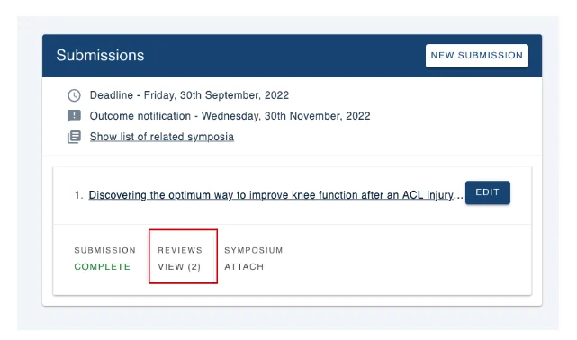
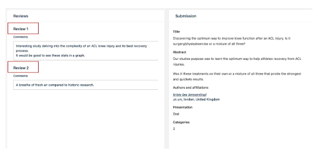
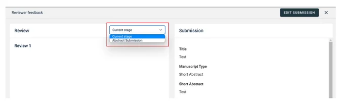

Accessing your reviews
SubmittingLast reviewed 28 July 2026
For people making a submissionOrganising the event?
This guide explains how to view reviewer feedback on your submission. Review access depends on your conference's settings, if you can't see reviews, the conference administrator may not have enabled this feature.#
How to view reviews
- Go to your Personal dashboard.
- Find the submission you want to check and click Reviews. The number in brackets indicates how many reviews have been received (e.g. "Reviews (2)" means two reviews).
- You'll see all review comments on the next screen. Reviews are anonymous — reviewer identities are not shown.


Submissions with multiple review stages
If your submission goes through more than one review stage, you can switch between them:
- At the top of the reviews page, find the Current Stage dropdown.
- Click the dropdown arrow and select the stage you want to view.

Need help?
Contact our support team via the Contact Form.

Did this page solve it?
Thanks — this helps us fix it.